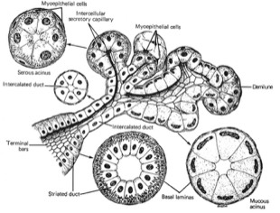

Exocriene klieren:
D) Eerst en vooral dien je na te gaan of je secreterende kliercel ‘alleen’ voorkomt tussen niet-secreterende epitheelcellen (zie deeltje bedekkende epithelen). We spreken dan van een unicellulaire (ééncellige) klier. Meestal liggen de secreterende kliercellen en hun afvoergangen echter in groepjes bij elkaar, we spreken dan van multicellulaire (meercellige) klieren. Bepaal of het om een multicellulaire of unicellulaire klier gaat.
De slijmbekercel zit in dit epitheel tussen de trilhaardragende cellen. Dit is een unicellulaire klier.

Bij multicellulaire exocriene klieren zijn de secreterende kliercellen georganiseerd rondom een lumen (L), waarin het secretieproduct wordt verzameld. De opeenvolgende afvoergangen zorgen ervoor dat het secreet naar de ‘buitenwereld’ (exo-) vervoerd wordt, waar het zijn functie zal vervullen. Let op: meestal kan je de verbinding tussen het lumen van het secreterende gedeelte en de afvoergang niet waarnemen omwille van de aansnijding van het complexe orgaan.
Vordering zelfstudie klierepitheel: